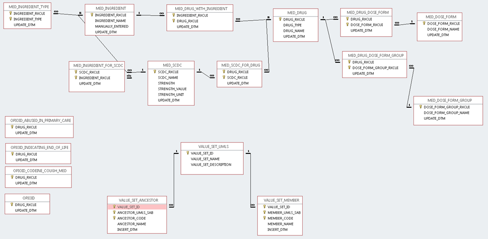

Standards-Based Implementation of CDC Recommendations as a CDS Hooks Web Service
The CDS Hooks interoperability framework was used for the integration of the guideline recommendations into EHR systems. This framework was chosen primarily due to its strong support from EHR vendors including Epic, Cerner, Allscripts, and Athena Health. This framework enables an EHR system to call out to an external CDS Web service to obtain patient-specific guidance in the form of "cards". A graphical overview of the CDS Hooks framework from its Web site is shown below.

The core components of this standards-based knowledge resource are described below. These components are all available at the locations listed in the Appendix.
A Microsoft Access database called OpioidManagementTerminologyKnowledge.accdb was created to enable the definition of the medication and terminology knowledge required. Also, an important desire was to be able to continually update this database when new concept codes entered the system. This was accomplished by developing the Terminology Knowledge Builder, described in the next section.
A visual representation of the database is shown below:
In essence, the top set of tables enables the use of RxNorm's RxNav API interface to build and maintain a medication knowledge base. After seeding the knowledge base with medication ignredients of interest in MED_INGREDIENT and MED_INGREDIENT_TYPE, the system queries the latest version of RxNorm hosted by the NLM to identify which drugs contain those ingredients; what dose forms they take; what components they have (important for combination drugs); the strength of those drugs; and the ingredients of those components (so that opioid vs. non-opioid ingredients can be distinguished).
The left set of tables uses database queries on this knowledge base to identify opioid types of interest: those abused in primary care (non-IV, non-topical), those indicating end of life (liquid form opioids except cough syrups), and those which are cough medications.
The bottom set of tables uses the UMLS hosted by the NLM. It allows the specification of value sets in terms of "ancestor concepts" (e.g., metastatic cancer, urine opioid testing). It then uses the UMLS API to identify all descendant concepts, which can then be aggregated to identify appropriate value sets. The current concepts defined are for conditions indicating end of life (metastatic cancer and pancreatic cancer) and urine opiate testing.
The terminology knowledge builder is a stand-alone Java program that populates and updates the medication and terminology knowledge base. It identifies when particular entries and value sets have been updated, so that a client system can use it to determine if the database used by the CDS system needs to be updated.
The core of the CDS Hooks Web service is a Java class (UtilsOpioid.java), located in the opioids-lib package. This class uses FHIR STU2 resources as the input and does the following:
OpenCDS knowledge modules utilize the UtilsOpioid Java class to take in FHIR resources as the input and return CDS Hooks cards as the output. These knowledge modules are in the opioid-mme and opioid-drugtesting packages.
While Epic is working on native support for CDS Hooks, such support is not currently available. We have therefore created an adapter/middleware for CDS Hooks on top of Epic to support this project. This adapter essentially translates the Epic-specific Best Practice Advisory (BPA) Web service interface into a CDS Hooks interface. Included in this adapter is a translator for converting the "markdown" output format used by CDS Hooks into the HMTL display format used within Epic.
The local EHR is configured to use the CDS Hooks CDC knowledge module. In this case, the Epic EHR and its BPA configuration was used. In this environment, we can specify such elements as:
End Output
Below is the screenshot of the end output from the MME rule in Epic. The urine drug testing rule has a similar output.
 {% include container-end.html %}
{% include footer.html %}
{% include container-end.html %}
{% include footer.html %}